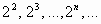
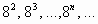
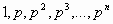
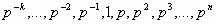
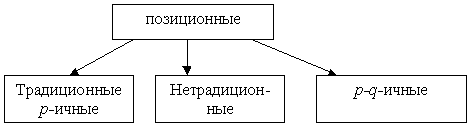

Раздел 1. Системы счисления
1. Общие определения
Система счисления — это способ наименования и записи чисел. Причем под числом понимается его величина, а не символьная запись.
Цифрами называются символы, при помощи которых записывается число.
Пример 1. В десятичной системе счисления используются цифры 0÷9, в римской системе счисления — цифры I, V, X, L, C, D и M. Существует также много других способов записывать числа.
Непозиционными называются системы счисления, в которых каждой цифре соответствует величина, не зависящая от местонахождения этой цифры в записи числа.
Позиционными называются системы счисления, в которых вклад каждой цифры в величину числа зависит от ее положения (позиции) в последовательности цифр, изображающей число.
Пример 2.Наша “родная” десятичная система счисления – позиционная.
Поясним это на числе 373. В нём цифра “3” обозначает количество сотен, т.е. вклад первой (самой левой) цифры 3 в величину числа– три сотни, второй ( самой правой) – три единицы. Т.е. цифра одна и та же, а вклад в величину числа она вносит разный в зависимости от своего местоположения.
Пример 3. Наиболее известной непозиционной системой счисления можно назвать Римскую. В ней, например, цифра “V” всегда равна 5 и не может обозначать 50 или 500. Большинство древних систем счисления были непозиционными.
Алфавит системы счисления — это совокупность различных цифр, используемых для записи чисел в данной системе счисления.
2. Позиционные системы счисления
Как мы уже знаем, в позиционных системах счисления вклад (“вес”) каждой цифры в величину числа зависит от позиции цифры в записи числа. Эти веса можно задавать с помощью различных математических закономерностей. Чтобы описать эти закономерности, введём понятие базиса.
Базис – это последовательность чисел, каждое из которых задает “вес” соответствующего разряда (позиции).
Пример 1
Ограничимся сначала представлением неотрицательных целых чисел. Выпишем базисы для некоторых систем счисления:
- десятичная: 1, 10,

- двоичная: 1, 2, 
- восьмеричная 1, 8, 
Т.е. в общем виде базис для любой из этих систем счисления можно записать в виде:
 - геометрическая прогрессия со знаменателем p.
Если рассматривать не только целые, но и рациональные числа, то у элементов базиса появятся отрицательные степени. Тогда базисом будет последовательность следующего вида:

Такие системы счисления, где базис образуют числа геометрической прогрессии со знаменателем p, называют традиционными или p-ичными. А само число p называют основанием системы счисления.
Наряду с широко известными системами счисления, базис которых образуют члены геометрической прогрессии, существуют и так называемые p-q-ичные системы счисления, а так же другие позиционные системы счисления, например факториальная и фибоначчева, которые принято называть нетрадиционными. Их отличие в том, что базис задаётся не с помощью геометрической прогрессии. Например, базисом факториальной системы счисления будут числа
1!, 2!, 3!, …, n!,… А базисом Фибоначчиевой будут числа Фибоначчи 1, 2, 3, 5, 8, 13, 21,…
Т.о. современное представление о позиционных системах счисления можно представить следующим образом:
